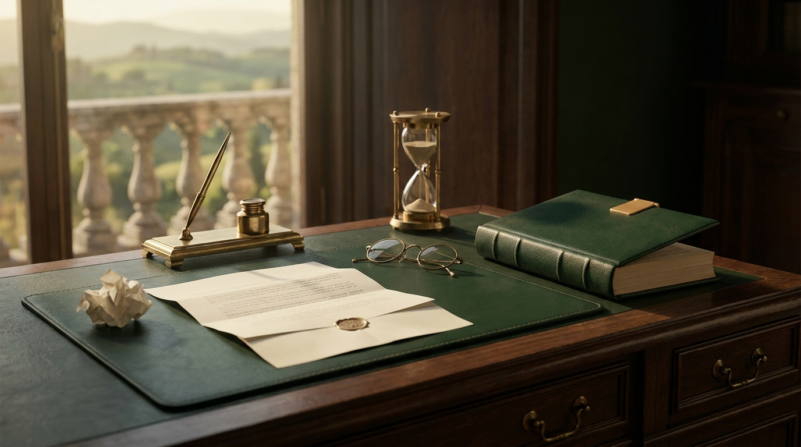

Lavorare durante la malattia: quando scatta il licenziamento
Svolgere un'altra attività mentre si è in malattia non è sempre vietato, ma può costare il posto. La Corte d'Appello di Roma ha confermato un licenziamento per giusta causa dopo che gli investigatori avevano documentato attività incompatibili con l'infermità dichiarata. La sentenza ribadisce i criteri che distinguono il riposo terapeutico dalla simulazione e definisce i confini della prova a carico del datore.

Il caso
Un dipendente in malattia è stato sorpreso a svolgere attività lavorativa durante il periodo di assenza certificata. Il datore di lavoro, insospettito, ha incaricato investigatori privati che hanno documentato le condotte. La Corte d'Appello di Roma ha confermato il licenziamento per giusta causa, ritenendo provata la simulazione dello stato di infermità.
Il punto centrale non è solo l'aver lavorato, ma l'aver tenuto comportamenti incompatibili con la patologia denunciata, tali da pregiudicare o ritardare la guarigione e da minare il vincolo di fiducia con il datore.
Inquadramento normativo
Lo svolgimento di un'altra attività durante la malattia non è di per sé illecito. La giurisprudenza distingue due ipotesi.
La prima: il lavoratore simula la malattia, che in realtà non sussiste. Qui l'attività esterna prova l'inganno e legittima il licenziamento per giusta causa ai sensi dell'art. 2119 del Codice civile.
La seconda: la malattia esiste, ma l'attività svolta dimostra l'idoneità a riprendere il lavoro o è tale da compromettere o ritardare la guarigione, in violazione degli obblighi di correttezza e buona fede (artt. 1175 e 1375 c.c.) e del dovere di diligenza (art. 2104 c.c.).
In entrambi i casi può configurarsi la giusta causa, perché viene meno il presupposto che giustifica l'assenza retribuita: la tutela della salute finalizzata al recupero della capacità lavorativa.
Sul piano della prova, la Cassazione ammette da tempo il ricorso agli investigatori privati. Il controllo non riguarda l'adempimento della prestazione (vietato dall'art. 4 dello Statuto dei lavoratori), ma la verifica di comportamenti estranei al rapporto che integrano un illecito. Il confine è netto: l'investigatore può documentare cosa fa il dipendente fuori dall'azienda, non sorvegliarne l'attività lavorativa interna.
Implicazioni pratiche
Per il lavoratore il messaggio è preciso. La malattia impone un obbligo di comportamento coerente con la cura: non occorre restare immobili, ma occorre evitare attività che contraddicano la patologia o ne ostacolino il decorso.
Una lombalgia che impedisce di stare seduti alla scrivania mal si concilia con il sollevamento di pesi in un'altra attività. Una sindrome ansioso-depressiva che giustifica l'assenza difficilmente regge se il dipendente gestisce un'attività commerciale a ritmo pieno.
La valutazione è sempre concreta: conta il tipo di patologia, le mansioni di provenienza e la natura dell'attività contestata. Non esiste un automatismo.
Per il datore di lavoro, la sentenza conferma che l'indagine investigativa è uno strumento legittimo, ma va usato con cautela. Le contestazioni generiche o le prove raccolte oltre i limiti del lecito espongono al rischio di annullamento del licenziamento.
Cosa fare in concreto
- Lavoratore: durante la malattia mantieni condotte coerenti con la patologia certificata. Se un medico ti autorizza ad attività compatibili, fai annotare l'indicazione e conservala.
- Lavoratore: prima di svolgere qualsiasi altra attività retribuita durante l'assenza, verifica che non contrasti con la diagnosi e con il tuo dovere di guarigione.
- Datore di lavoro: prima di affidare un incarico investigativo, valuta che riguardi comportamenti esterni e non il controllo della prestazione, per evitare violazioni dell'art. 4 dello Statuto.
- Datore di lavoro: formula la contestazione disciplinare in modo specifico, indicando date, fatti e ragioni di incompatibilità con la patologia.
- Entrambi: ricostruite tempestivamente la documentazione clinica (certificati, referti, prescrizioni), perché la compatibilità tra malattia e attività è una questione tecnico-medica oltre che giuridica.
Consigliamo, in presenza di una contestazione o di un dubbio operativo, di richiedere una valutazione preliminare prima di assumere iniziative che incidano sul rapporto di lavoro.
Disclaimer
Contributo informativo a cura di Tamburro & Partners - Avv. Giuseppe Tamburro. Non costituisce parere legale.
Ogni storia di lavoro ha i suoi tempi.
Se gestisci HR e vuoi un confronto su contenzioso, ispezioni o licenziamenti, scrivi allo studio. Ti rispondiamo entro un giorno lavorativo.